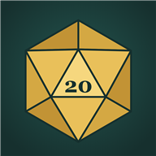
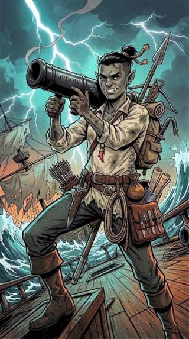

RPG Hub
Your characters, guides and trackers.
Characters
D&D 5e

SkippyHalf-orc Artillerist artificer›The One Ring
TTom BinMen of Bree · Treasure Hunter›Guides
D&DD&D guides8 guides›TORThe One Ring guides2 guides, 2 PDFs›Offline: open this page once with a network. After that the characters, guides and PDFs work without one. On iPhone or iPad: Safari, Share, Add to Home Screen (do it from this page). The Home Screen app keeps its own saved data.